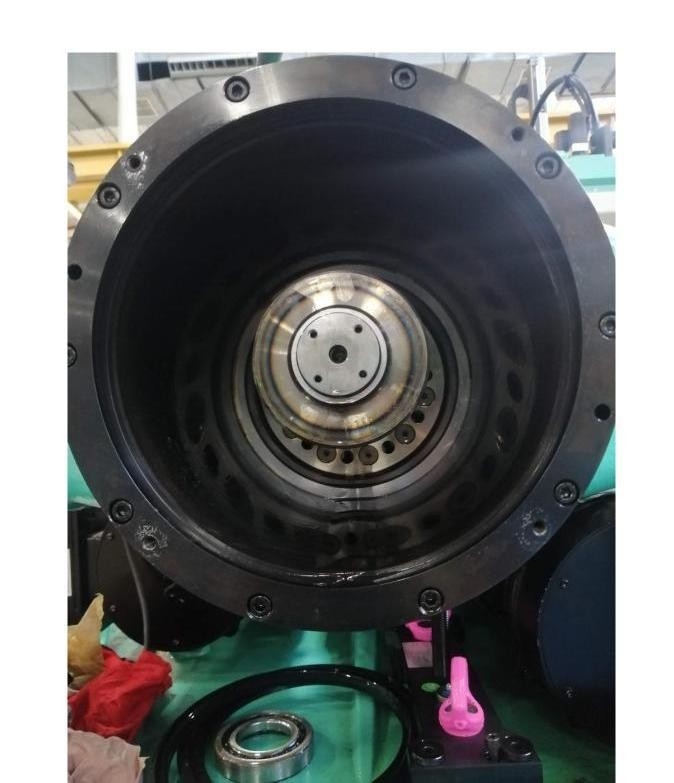
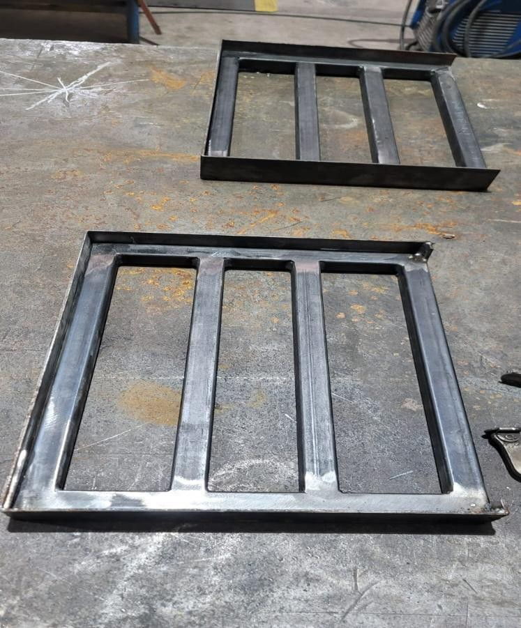
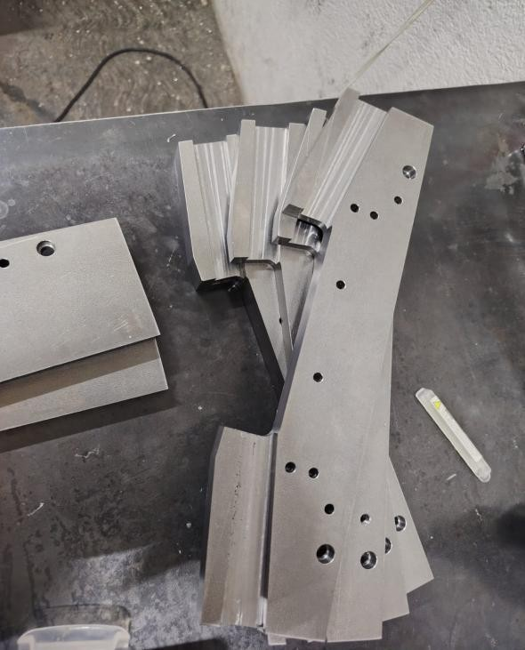
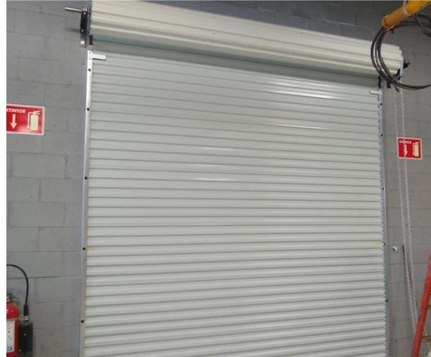

Mantenimiento industrial
Atención preventiva y correctiva a maquinaria, equipos auxiliares, soldadoras ultrasónicas y embobinadoras.
INGENIERÍA QUE RESUELVE
Soluciones de mantenimiento, fabricación e ingeniería para que tu industria siga avanzando.

Mantenimiento preventivo y correctivo
01 / LO QUE HACEMOS
Desde un equipo que necesita atención hasta un proyecto de fabricación: combinamos experiencia técnica, diseño y ejecución.
Atención preventiva y correctiva a maquinaria, equipos auxiliares, soldadoras ultrasónicas y embobinadoras.
Soporte y mantenimiento a equipos de moldeo, con experiencia en máquinas ENGEL y ARBURG.
Fabricación, modificación e instalación de estructuras adaptadas a los procesos de tu industria.
Mantenimiento a instalaciones, electricidad, obra civil e instalación de maquinaria y cortinas industriales.
Suministro de herramientas, componentes, sensores, sistemas de seguridad y sistemas de visión.
Mantenimiento a scrubbers, maquinado, grabado láser y atención a equipos e instalaciones auxiliares.
02 / TRABAJO EN CAMPO
Una muestra de los proyectos y servicios documentados en nuestra presentación.



03 / SOMOS SGI
Somos Servicios Generales de Ingeniería, una empresa mexicana que inició actividades en 2021 en Nogales, Sonora. Ayudamos a la industria a renovar, mantener y hacer más eficientes sus procesos.
Nuestro equipo de técnicos e ingenieros trabaja con un objetivo: ofrecer soluciones confiables y una comunicación cercana durante cada proyecto.
Entendemos el problema y las especificaciones de tu operación.
Definimos alcance, solución, presupuesto y tiempos de entrega.
Trabajamos con enfoque en funcionamiento, calidad y seguridad.
HABLEMOS DE TU PRÓXIMO PROYECTO
Cuéntanos el equipo, servicio o proyecto que tienes en mente. Revisemos juntos la solución.
Solicitar cotización por correo ↗Jardín de la Montaña, Lago Azul 45
Nogales, Sonora, México